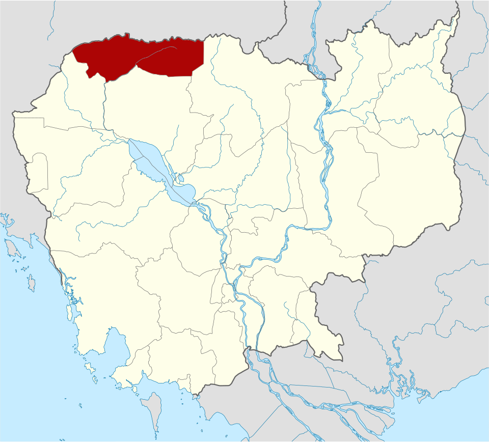
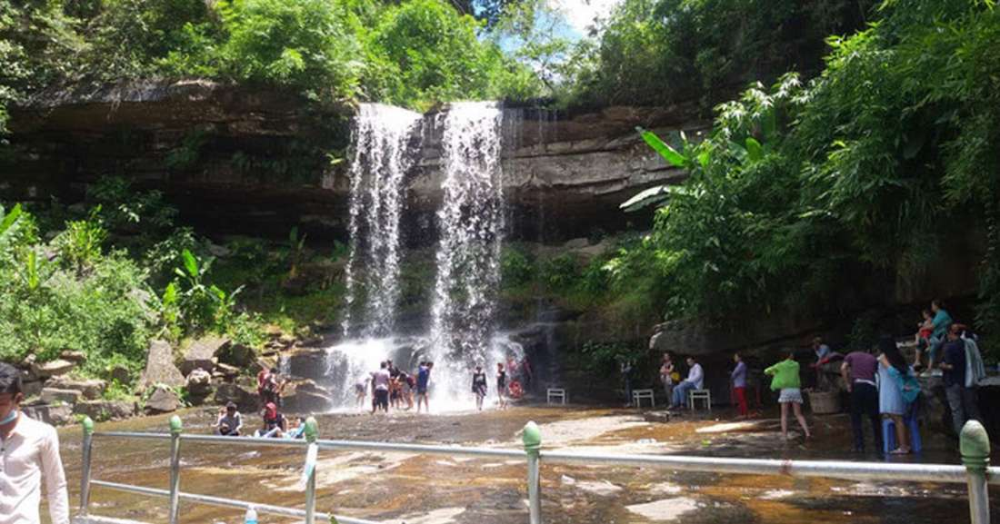

ខេត្តឧត្ដរមានជ័យ
ខេត្តឧត្ដរមានជ័យ គឺជាខេត្តមួយស្ថិតនៅភាគពាយ័ព្យក្នុងប្រទេសកម្ពុជា ដែលមានព្រំប្រទល់ជាប់នឹងខេត្តបន្ទាយមានជ័យនៅខាងលិច ខេត្តសៀមរាបនៅខាងត្បូង និងខេត្តព្រះវិហារនៅខាងកើត ហើយមានព្រំដែននៅខាងជើងជាប់នឹងព្រំដែននឹងប្រទេសថៃ។ ទីរួមខេត្តគឺសំរោង។ ខេត្តនេះមានចម្ងាយប្រហែលជាង ៤៦២ គីឡូម៉ែត្រពីរាជធានីភ្នំពេញបើចេញដំណើរពី ខេត្តឧត្តរមានជ័យមកតាមបណ្តោយផ្លូវជាតិលេខ៦៨ និងភ្ជាប់មកផ្លូវជាតិលេខ៦។ ខេត្តនេះមានទេសចរណ៏ធម្មជាតិ និងទេសចរណ៏វប្បធម៌។ ខេត្តនេះជាតំបន់ដែល មានប្រាសាទបុរាណជាច្រើនផងដែរ។ រីឯតំបន់ទេសចរណ៏ធម្មជាតិវិញ ទីនោះមានតំបន់អច្ឆរិយមួយគឺតំបន់រមណីយដ្ឋានដីដុះ ឬ រលួសធំដីដុះ ដែលមានទីតាំងនៅជាប់ជើងភ្នំដងរែក និងជាប់ផ្លូវក្រវ៉ាត់ព្រំដែន។

លក្ខណៈភូមិសាស្ត្រ
ខេត្តឧត្តរមានជ័យស្ថិតនៅប៉ែកខាងជើងឈៀងខាងលិចនៃប្រទេសកម្ពុជា ដែលមានព្រំប្រទល់ៈ ខាងជើងជាប់នឹងប្រទេសសៀម (ខ្មែរលើ) គឺ៖ ខេត្តបុរីរ៉ាំ,សុរិន្ទ និង ស៊ីសាកេត ដែលមានប្រវែង២២៤គ.ម ខ័ណ្ឌចែកដីយើងនិងថៃដោយភ្នំដងរ៉ែក (គ្មានដីវាលរាបទេជាមួយ ប្រទេសថៃ គឺសុទ្ធតែភ្នំដោយមានតែច្រក៣សម្រាប់ចេញចូលប៉ុណ្ណោះគឺ៖ ច្រកជុបគគី, ច្រកអូស្មាច់, ច្រកជាំសាង៉ាម ។ - ខាងត្បូងជាប់នឹងខេត្តសៀមរាប - ខាងកើតជាប់នឹងខេត្តព្រះវិហារ - ខាងលិចជាប់នឹងខេត្តបន្ទាយមានជ័យ ខេត្តឧត្តរមានជ័យមានចំងាយប្រមាណ ៤៣៩ គីឡូម៉ែត្រពីទីក្រុងភ្នំពេញ ដោយធ្វើដំណើរតាមផ្លូវជាតិលេខ៦អា និងកាត់តាមខេត្តកណ្តាល កំពង់ចាម និងបន្តដំណើរ តាមផ្លូវជាតិលេខ៦ ពីចំនុចបំបែកស្គន់កាត់តាមខេត្តកំពង់ធំ សៀមរាប ដល់ចំណុច ស្រុកក្រឡាញ់នៃខេត្តសៀមរាប មានផ្លូវបំបែកឆ្ពោះទៅទិសខាងជើងតាមផ្លូវលេខ ៦៨ ទៅកាន់ខេត្តឧត្តរមានជ័យ ។ ខេត្តមានផ្ទៃដីសរុប ៦ ១៥៨ គ.ម២។ ខេត្តឧត្តរមានជ័យមានអាកាសធាតុក្ដៅសើមដូចនៅទូទាំងប្រទេសកម្ពុជាដែរ។ រដូវក្ដៅចាប់ពីខែមិនាដល់ឧសភា(សីតុណ្ហភាពពី២៧ទៅ៣៥អង្សា) រ ដូវវស្សាចាប់ពីខែឧសភាដល់តុលា(សីតុណ្ហភាពពី២៤ទៅ៣២អង្សា និងសំនើម៩០%) និងរដូវរងារចាប់ពីខែវិច្ឆិការដល់ខែមិនា(សីតុណ្ហភាពណី២២ទៅ២៨អង្សា)
.jpg)
រដ្ឋបាល
ខេត្តឧត្ដរមានជ័យចែកចេញជា ៤ ស្រុកនិងក្រុង១គឺ៖
- ស្រុកអន្លង់វែង
- ស្រុកបន្ទាយអំពិល
- ស្រុកចុងកាល់
- ក្រុងសំរោង
- ស្រុកត្រពាំងប្រាសាទ
តំបន់ទេសចរណ៍
ទឹកជ្រោះដាចំប៉ីទឹកធ្លាក់ ដាចំប៉ី» បាន និងកំពុងរង់ចាំស្វាគមន៍ ភ្ញៀវទេសចរយ៉ាងអន្ទះសារបំផុត នៅឯនាយខាងស្ដាំដៃ ហៀបនឹងទៅដល់ព្រំប្រទល់ដែន អន្តរជាតិអូរស្មាច់។ ភ្ញៀវអាចធ្វើដំណើរតាមរថយន្ដ ឬ ម៉ូតូឡើងភ្នំដោយឆ្លងកាត់វត្ដល្អាងតាថុង អែបរូបចម្លាក់អណ្ដើកធំ តម្រង់ទៅស្នាក់កា រប៉ុស្ដិ៍អង្គភាពនគរបាលទេសចរណ៍ដ៏ស្ងាត់ជ្រងំ រួចដើរថ្មើរជើងទៅខាងស្ដាំដៃ ប្រមាណ៣០ ០ម៉ែត្រទៀត លោកអ្នកនឹងឃើញទឹកធ្លាក់ រាយប៉ាយពីលើកំពូលភ្នំរហូតដល់ចង្កេះភ្នំ(ល្អាងតាថុង )។ពីចំណុចតូបលក់ដូរចំណី និងភេសជ្ជៈត្រជាក់ៗរបស់អ្នកស្រី វី រហូតឡើងដល់កំពូលភ្នំ ទឹកហូរបាចសា ចលើជម្រាលភ្នំថ្មជាច្រើនកន្លែងបន្ដរង់ចាំភ្ញៀវជាហូរហែ។ទីនេះមានទឹកហូរកម្ពស់ទាបតែប្រមាណ១ម៉ែត្រ និង ហូរច្រោះតាមរូងថ្មរាងជារង្វង់។ចំណុចទាបបំផុត ក្បែរតូបភេសជ្ជៈចម្ងាយប្រមាណ៥០ម៉ែត្រ ចុះតាមជ្រលងឡោមព័ ទ្ធ ដោយរុក្ខជាតិតូចធំឈរច្រូងច្រាងបន្ដជាម្លប់យ៉ាងត្រឈឹងត្រឈៃ។ទឹកធ្លាក់ខ្ពស់បំផុតជាង ៥ម៉ែត្ររំលេចទស្សនីយភាព ទាក់ទាញបំផុត។ជ្រលងទឹកធ្លាក់ជ្រកក្រោមម្លប់ឈើស៊ុបទ្រុបនេះ តែងតែទាក់ទាញទ័ពស្វាជាច្រើនរយក្បាល មករកផលានុផលបរិ ភោគប្រចាំរដូវមិនដាច់រយៈដល់ការវាតទីបំភ័យភ្ញៀវផងដែរ។អ្នកស្រី វី ជាអ្នកលក់ដូរក្បែរទីឋានទឹកធ្លាក់នោះជាង១០ឆ្នាំឲ្យដឹងថា៖ «ដល់រ ដូវមានផ្លែឈើព្រៃសម្បូរ ហ្វូងស្វារាប់រយក្បាលនឹងនាំគ្នាមកកាន់ទីនេះ ហើយប្រញាយគ្នាពាសពេញលើដើមឈើ និងដី។ ខ្ញុំភ័យណាស់ ហើយពួកវាមិ នខ្លាចមនុស្សទេ។ ទុករបស់ប្រហែសវានឹងអូសយកទៅហើយ»

អាតោដួងចិត្ត (ទំនប់ស្ទឹងស្រែង២): ស្ថិតនៅស្រុកចុងកាល់ ជាកន្លែងលំហែកាយដ៏ពេញនិយម មានទេសភាពបៃតងខៀវខ្ចី និងបឹងធម្មជាតិ។អាតោដួងចិត្ត ឬក៏គេច្រើនហៅថា ទំនប់អាងទឹកស្ទឹងស្រែង មានទីតាំងស្ថិតនៅ ភូមិអាតោ ឃុំចុងកាល់ ស្រុកចុងកាល់ ខេត្តឧត្តរមានជ័យ និងមានចម្ងាយប្រហែល ~65km ពីផ្សាររង្វង់មូលអន្លង់វែង។ អាតោដួងចិត្ត ស្ថិតនៅក្នុងប្រភេទ៖ ទេសចរណ៍កែច្នៃឬរមណីយដ្ឋានកែច្នៃ, ទេសចរណ៍ធម្មជាតិ។ រីឯចំណុចសំខាន់ៗនៅ អាតោដួង ចិត្ត មានដូចជា៖ ជិះទាទឹក, ជិះទូក, រៀបចំអាហារដោយខ្លួនឯង, លេងទឹកឬហែលទឹក, គយគន់ថ្ងៃលិច, ម្ហូប និងចំណុចផ្សេងៗទៀត។
បឹងស្នោជាទីជួបជុំដ៏ធំរបស់អ្នកខេត្តឧត្តរមានជ័យ ជាពិសេសនាពិធីបុណ្យអុំទូក អកអំបុក បណ្តែតប្រទីប និងសំពះព្រះខែ។ នៅជុំវិញបឹង មានភោជនីយដ្ឋាន និងអាហារដ្ឋានតាមផ្លូវដ៏សម្បូរបែប។ សួនច្បារពោរពេញទៅដោយរុក្ខជាតិបៃតង សកម្មភាពកម្សាន្តផ្សេងៗ ក៏ដូចជាសំឡេងបក្សាបក្សីទ្រហឹងអឺងកង។ បច្ចុប្បន្ន ខេត្តកំពុងចូលរួមកែលម្អជម្រកសត្វនៅក្នុងបឹងឲ្យកាន់តែមានភាពល្អប្រសើរ។ លោក ភួង លីណា ប្រធានមន្ទីរបរិស្ថានខេត្តឧត្តរមានជ័យ បានរៀបរាប់ថា៖« ខាងមន្ទីរបរិស្ថានមិនទាន់បានសិក្សាអំពីប្រភេទសត្វស្លាប នៅក្នុងបឹងនេះនៅឡើយទេ ហើយអ្វីដែលកំពុងខិតខំប្រឹងប្រែង គឺកែលម្អជម្រករបស់វាឲ្យមានសភាពប្រសើរឡើង។ ចំពោះ មច្ឆា ដែលរស់នៅក្នុងបឹងនេះវិញ យើងមានការអភិរក្ស និងព្រលែងត្រីចម្រុះជាច្រើនប្រភេទជារៀងរាល់ឆ្នាំនៅថ្ងៃ ទិវាមច្ឆាជាតិ ហើយក៏គ្រោងព្រលែងបន្ថែមក្នុងឆ្នាំ២០២១»។
.jpg)